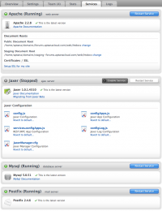
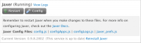

Contents |
What
  Services
Services
{kind=link}
The Services screen in Aptana Cloud lets you restart, administer, and configure services running on the cloud servers, including Apache, Jaxer, MySQL, and Postifx. These services the current installed version number next to their name.
How
Restarting
{kind=link}
To restart Apache, Jaxer, or MySQL, simply click the "restart" button below the service name. A pop-up window will ask you to confirm the restart. Click "ok" or "cancel".
Upgrading
{kind=link}
If there is an available upgrade for any services, Upgrade Now will appear next to the version number. There will be a link to the Release Notes for the new version, and a link to "upgrade now".
Clicking the "upgrade now" link will first launch a pop-up confirmation box. Click the "cancel" button to abort the upgrade. Click "ok" to continue. Once you click "ok" a new pop-up will indicate that the upgrade has started. You can click the "close" button on this pop-up without stopping the upgrade. Once the upgrade is complete, the Jaxer service will be restarted automatically.
Reinstalling Jaxer
You can reinstall the Jaxer service by clicking the "reinstall Jaxer" link next to the current version.
When you click the "reinstall Jaxer" link, a pop-up confirmation screen appear. Click the "cancel" button to abort the reinstallation. Click "ok" to continue. After you click the "ok" button, a new pop-up will appear stating that the reinstall has started. You can click "close" button on this pop-up without stopping the reinstall. After Jaxer is reinstalled, it will restart the service automatically.
Configuring
 Config Jaxer
{kind=link}
Clicking the configure button below the Jaxer name folds out a panel with links to the configuration files for Jaxer. Click the name of the file you wish to edit, and it will launch in a new editor window. Close the file to cancel, or click save to make your change.